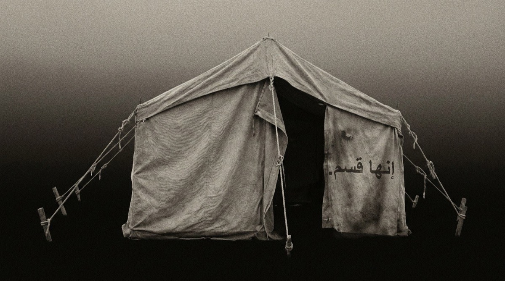
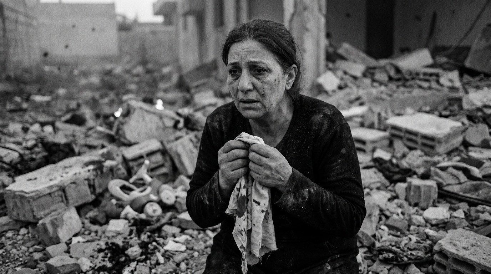
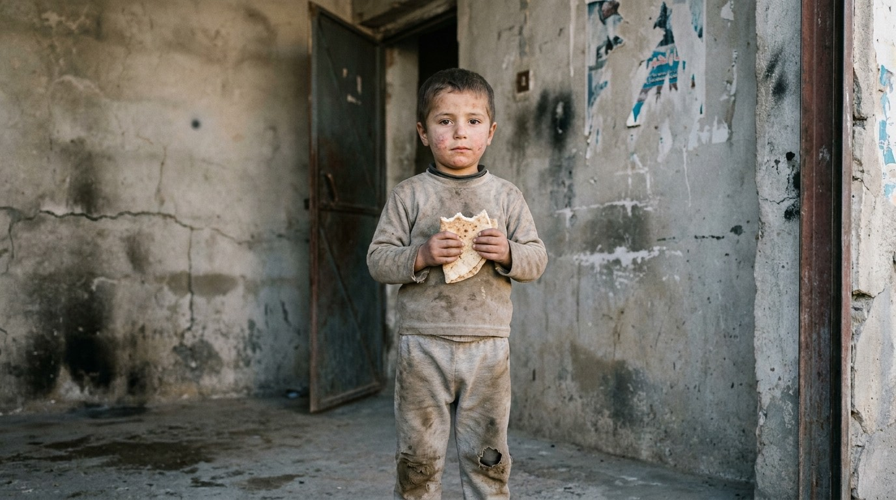
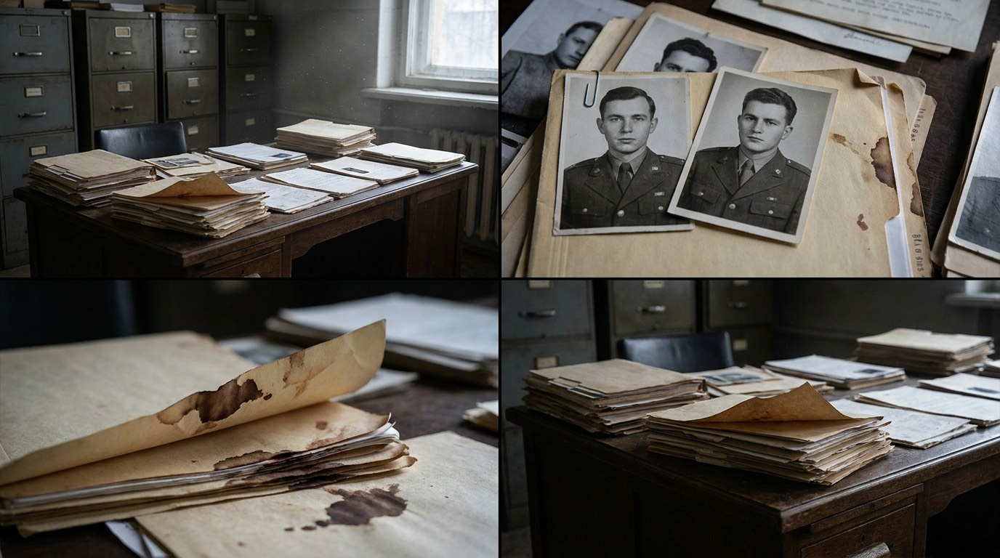
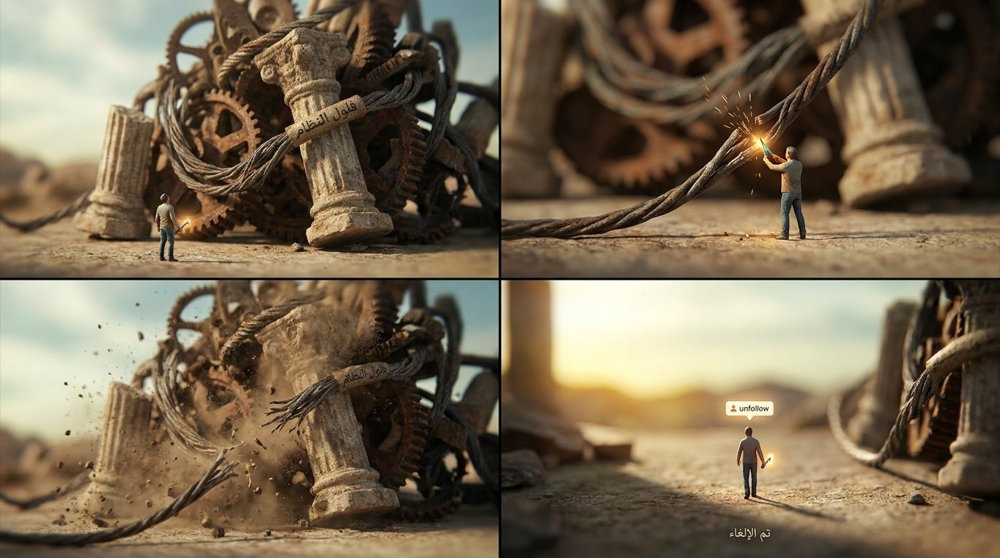
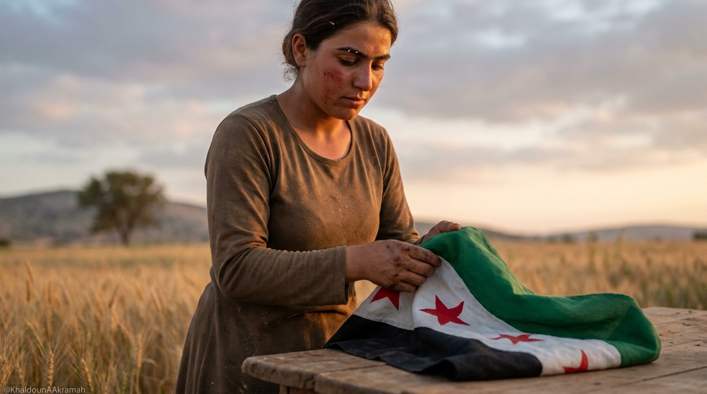
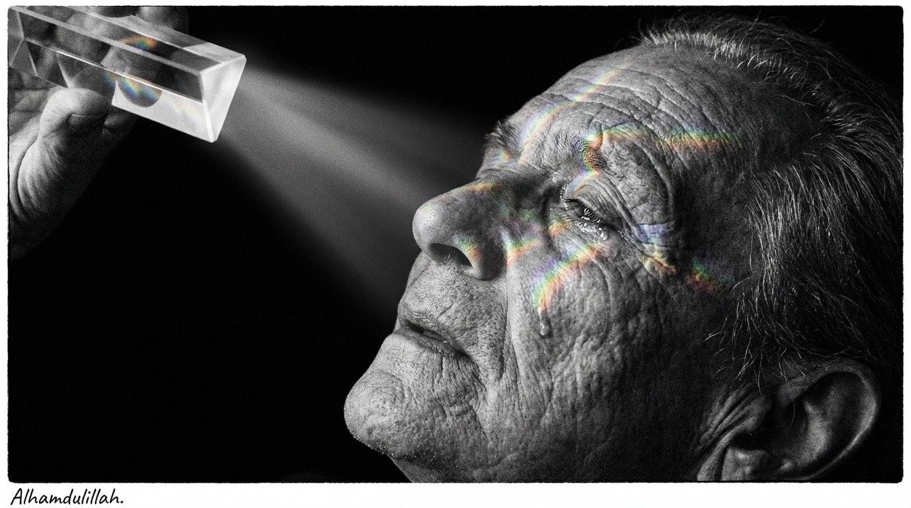
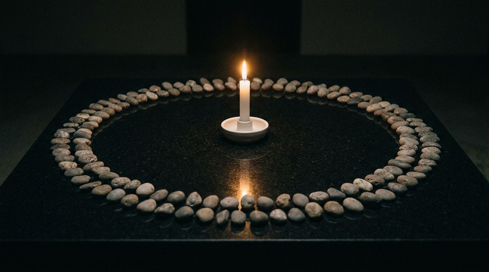

01. ليل المخيمات
خيمة الصمود في وجه العتمة
صورة لواقع ملايين المهجرين الذين لم يفكروا بعد بترف الاقتراع بل بحقهم في الأمان والعودة الكريمة.

أي تشاركية سياسية تلك التي يُطالب بها قبل أن تكتمل أركان الدولة وتُحصن مؤسساتها؟ حين يجلس الفلول في بيوتهم المترفة متربصين بالصناديق، بينما الشعب الثائر لا يزال في خيام البرد والصقيع، لم يفكر بعد بترف الاقتراع بل بحقه في الأمان والعدالة والعودة الكريمة!
بحصار الغوطة الشرقية، الناس صارت تحرق البلاستيك وتصنع منه وقودا لتدفئة أطفالها، وعاشوا على طحن الشعير والخبيزة والسلق لسنوات طويلة، وكنت شاهدا بينهم على تلك الملحمة الإنسانية الخالدة.
بالمعضمية ومضايا، حوصرت الأجساد حتى اضطر الأحرار لأكل ما لا يُؤكل، وفي حصار حلب الشهباء، كانت الأمهات تنوم أطفالهن على الجوع والألم، وفي الحجر الأسود ومخيم اليرموك المنكوب، لو كان بوسع الناس أكل الحجارة والردم والتراب لأكلوه صمودا ودفاعا عن أرواحهم.
وبإدلب وعموم الشمال المحرر، عاشت ملايين العائلات بالخيام التي تحرق بحر الصيف وتتجمد بزمهرير الشتاء. ومع كل هذا القهر، ما فكر أحد من هؤلاء الأحرار ولو للحظة واحدة أن يندم على الكرامة أو يفرط بنسمة الحرية التي انتزعها بدمه.
«وأنت اليوم تأتي بكل وقاحة لتقول: يرحم أيام قانون قيصر؟! قانون قيصر الذي كان من أسبابه المباشرة تسريب عشرات الآلاف من صور شهدائنا الذين قضوا جوعا وتحت سياط التعذيب الممنهج في مسالخ الأسد السرية!»
صوت الذاكرة والكرامة




أي منطق سياسي سليم يقبل أن تضع على خط السباق الانتخابي دولة عميقة تملك مفاصل التوجيه والتمويل وأذرع المخابرات التي نسجت علاقاتها على مدى ستة عقود، في مواجهة شعب خرج لتوه من تحت القصف والدمار؟
إن التشاركية السياسية في هذا التوقيت الخاطئ تشبه وضع محمد حمشو وأمثاله من حيتان الأموال السوداء جنبا إلى جنب مع أحمد أبا زيد أو قادة الفكر الثوري والوطني النقي، ثم تقول لهما: تنافسا بنزاهة في معركة الاقتراع!
شبكات نفوذ أخطبوطية، أموال طائلة مكدسة، حضور إداري وإعلامي متغلغل، واطمئنان خلفي دون محاسبة حتى اللحظة.
خيام تفتقر لأبسط مقومات الحياة، عائلات مشتتة تبحث عن مفقوديها، مدن مدمرة تنتظر الإعمار، وجراح غائرة تتطلب العدالة أولا.
إن فتح الصناديق قبل تفكيك هذه الشبكات العميقة ليس سوى إعادة إنتاج ناعمة لنظام الاستبداد، وإجهاض لكل التضحيات التي قدمها الشعب السوري على مدار خمسة عشر عاما.
هل تم تسليم قوائم ضباط الأفرع الأمنية؟ أين الذين أصدروا الأوامر بقصف المشافي وخنق المدن بالسلاح الكيماوي وإلقاء آلاف البراميل المتفجرة فوق الأحياء السكنية؟
لا يمكن بناء حياة ديمقراطية مستدامة فوق ركام مقابر جماعية لم يُحاسب قتلتها. العدالة ليست انتقاما بل هي الحصن الأول للدولة السورية الجديدة، وضمانة عدم تكرار المجزرة.
إن سنوات التحصين الخمس هي المساحة الزمنية الإلزامية لمراجعة قيود النفوس، واستعادة الأملاك المنهوبة، وتنقية السجلات المدنية من التزوير الممنهج الذي مارسه النظام لعقود.
من كان شريكا في دمار سوريا وتهجير أهلها لا يحق له أن يرتدي اليوم ثوب الناصح الديمقراطي. قبل أن تطالبوا بحصص في البرلمان والحكومة، اذهبوا إلى محاكم العدالة وقدموا كشوف حساباتكم واعتذروا عن الدماء التي أهرقتموها.

خيار التحصين المؤسسي لخمس سنوات ليس خيارا فئويا بل ضرورة بقاء وطني
الدولة ليست نظام حكم زائل، بل هي المظلة الوطنية الكبرى التي تجمع كل السوريين. الحفاظ على هياكلها وتطهيرها من الداخل هو السبيل الوحيد لمنع الفوضى والتقسيم.
فترة التحصين الخمس سنوات تمنح الوقت اللازم لعودة المهجرين، واستقرار الاقتصاد، وبناء أحزاب وطنية حقيقية لا أحزاب واجهات مدفوعة بأموال الفلول وتجار الحرب.
كل الدول التي انتقلت من شمولية متوحشة إلى ديمقراطية مستقرة خاضت فترات تحصين قاسية وطويلة لمنع عودة الثورات المضادة وشبكات الأجهزة القديمة بثياب براقة.
«خيطوا بغير هذه المسلة»! لن تُسرق تضحيات السوريين عبر صناديق معلوبة، ولن يُسمح للفلول باختطاف مستقبل أولادنا تحت لافتات التشاركية المستعجلة.
لقطات وثائقية حقيقية توثق مراحل الصمود والوجع وبناء الأمل الوطني
صورة لواقع ملايين المهجرين الذين لم يفكروا بعد بترف الاقتراع بل بحقهم في الأمان والعودة الكريمة.
أكل الناس الخبيزة والسلق وأحرقوا البلاستيك للوقود ولم يندموا لحظة واحدة على كرامتهم وحريتهم.
عاشوا في حر الصيف وصقيع الشتاء بلا بواك وبلا تنازل عن الثوابت الوطنية.
رسالة بليغة لكل من يبتز الناس في أرزاقهم: الكرامة أولا والخبز لا يباع بالذل والتبعية.
أجهزة وشبكات تغلغلت في كل زاوية، لا يمكن تفكيكها ومحاسبتها في أشهر قليلة بل بسنوات عمل مؤسسي جاد.
من جلسوا في بيوتهم انتظارا لفرصة نجاة سياسية تعيدهم للواجهة عبر انتخابات مستعجلة.
لا ديمقراطية بلا عدالة انتقالية، ولا عفو عمن أراق دماء السوريين وهجر ملايينهم.

أمانة دماء الشهداء وتضحيات المعتقلين خط أحمر لن يفرط فيه أي وطني شريف.

ملامح الصبر والكبرياء التي هزمت أعتى آلات الإجرام ولن تهزمها مناورات الفلول السياسية.

تخليد لأرواح عشرات آلاف المعتقلين الذين قضوا تحت سياط الجلاد وماتوا جوعا وعطشا في أقبية الأسد.
لن تكون الفترة الانتقالية جسرا لعودة من دمروا البلاد، ولن تكون الصناديق أداة لإعادة تدوير القتلة. إن السنوات الخمس هي درع الحماية للدولة السورية الجديدة، وفيها تُبنى المؤسسات وتُحق الحقوق وتُصان الكرامة.